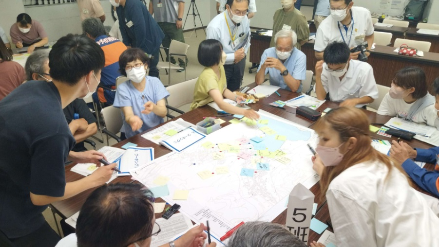
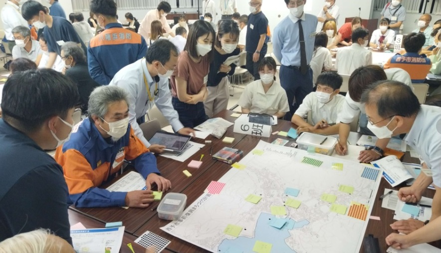
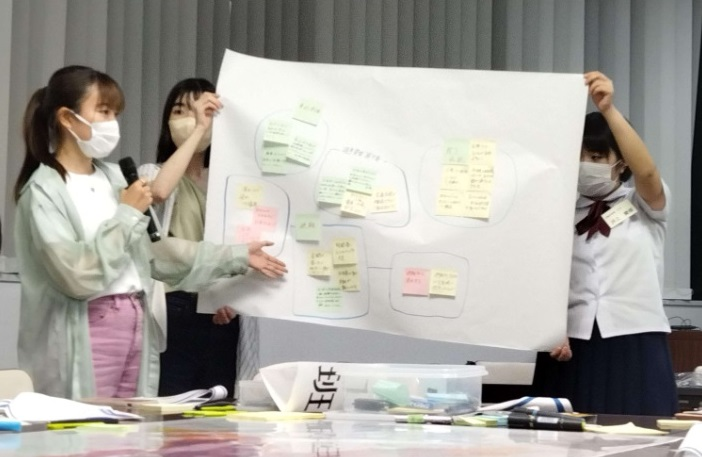
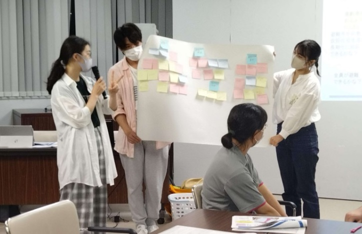
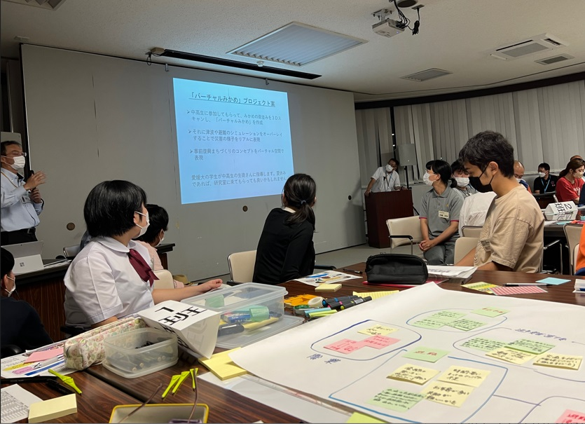
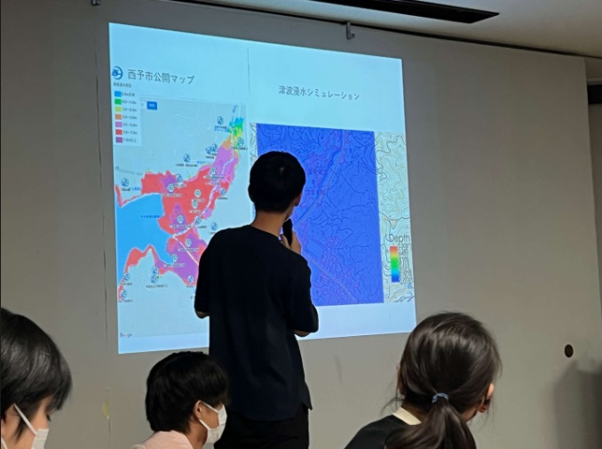

mizukan
イベント
事前復興まちづくり計画検討第1回地域ワークショップ
2022年6月21日、西予市・三瓶文化会館で行われた「事前復興
まちづくり計画検討第1回地域ワークショップ」に参加してきました.


ワークショップでは、"三瓶の魅力や思い出の発見"や"起こりうる災害"
について地図やハザードマップを見つつ、グループに分かれて話し合い、
その後、グループ毎に発表して、意見共有をしました．


住民の方と話すのはとても緊張しましたが、地元の
方々の貴重な意見が聞けて、とても勉強になりました.

「バーチャルみかめプロジェクト案」に
ついて、森脇先生より説明がありました.

西予市における津波浸水シミュレーションについて、発表しました.
三瓶でのワークショップは、これからも開催予定なので、
今回の意見を参考にしつつ、より良いものにしていきたいです.
文責 花本